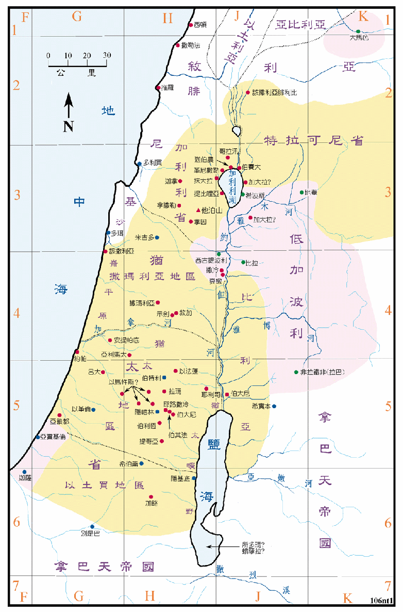

本图中收集了新约圣经内所有以色列地的地名。
罗马帝国在 63BC 征服了巴勒斯坦，犹太就落在罗马的统治之下，但罗马帝国仍给予犹太人相当程度的自治权，又给犹太人立了一个有一半犹太血统 (以东人的后裔) 的王 (是一个挂名的王，实际上是罗马帝国的封臣)，就是史称为大希律的。他的领土包括有犹太、加利利、比利亚和特拉可尼等四个省，其中犹太省又分成撒玛利亚、犹太和以土买等三个地区。所以犹太一词，可以分别代表犹太国、犹太省和犹太地区。
大希律自 37BC 至 4BC 间作犹太人的王，他死后由他的三个儿子分别治理他的封地。此人在四福音书中皆称为希律王，亚基老 (4BC ～6AD) 分得犹太省，安提帕 (4BC ～39AD) 占有加利利和比利亚，腓力 (4BC ～34AD) 得到特拉可尼。其中亚基老暴虐无道，作王十年后即被犹太人请愿，遭罗马皇帝罢黜后流放，改由罗马派巡抚管理。
以下六幅地图，系说明有关主耶稣基督一生的事迹，但由於四福音书各有其主题，所记载的内容各有取舍，所以无法仅照其中任何一卷绘制一套完整的地图。